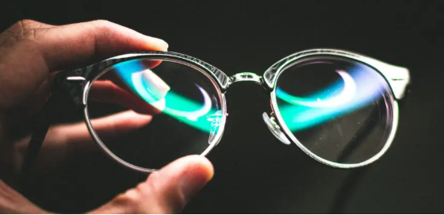
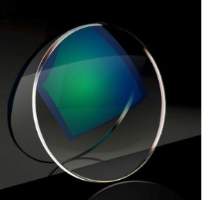

Guía completa de tipos de cristales para lentes en Venezuela: ¿Cuál es el ideal para ti?
A la hora de renovar tus gafas, elegir una montura bonita es solo la mitad del trabajo. El componente más importante para tu salud visual y comodidad diaria son los cristales. La tecnología óptica ha evolucionado notablemente, ofreciendo opciones diseñadas para adaptarse a cada estilo de vida y necesidad visual.
No todos los cristales son iguales ni sirven para lo mismo. Seleccionar el material y el diseño adecuado no solo optimiza tu nitidez al ver, sino que también reduce la fatiga y protege tus ojos de factores ambientales dañinos. A continuación, desglosamos las claves para tomar la mejor decisión.
1. Los materiales de los cristales: Resistencia y ligereza
El material del que está hecho el lente determina su grosor, peso y nivel de resistencia a los impactos cotidianos:
- Cristales Orgánicos (Plásticos): Son los más comunes hoy en día. Son increíblemente ligeros, mucho más seguros que el vidrio tradicional ante roturas y permiten aplicar una amplia variedad de tratamientos protectores.
- Policarbonato y Trivex: Materiales de alta resistencia física. Son hasta diez veces más resistentes a los golpes que los orgánicos estándar, lo que los convierte en la opción obligatoria para niños, deportistas y lentes de seguridad.
2. Diseños según la necesidad de enfoque
Dependiendo de cuántas distancias necesites corregir, el diseño óptico del cristal variará por completo para darte el mejor rendimiento:
Lentes Monofocales
Son los cristales que tienen la misma graduación en toda su superficie. Se utilizan para corregir un solo problema visual específico, ya sea de lejos (como la miopía) o de cerca (como la hipermetropía o la lectura inicial).

Lentes Bifocales y Progresivos
Diseñados principalmente para combatir la presbicia o vista cansada que aparece con la edad:
- Los bifocales dividen el cristal en dos zonas con una línea visible: la parte superior para lejos y la inferior para cerca.
- Los progresivos ofrecen una transición suave y sin líneas estéticas, permitiendo enfocar a distancias lejanas, intermedias (computadoras) y cercanas en un mismo cristal.
3. Tratamientos esenciales para optimizar tus cristales
Un buen material no está completo sin los recubrimientos adecuados instalados sobre la superficie del cristal. Los más recomendados para el día a día son:
- Antirreflejante: Elimina los reflejos molestos de las luces artificiales y faros de autos, mejorando la estética del lente y la claridad nocturna.
- Filtro de Luz Azul: Bloquea la radiación de alta energía de las pantallas, previniendo el cansancio ocular digital.
- Fotocromáticos: Cristales inteligentes que se aclaran en interiores y se oscurecen automáticamente al salir al sol.

4. ¿Cómo saber qué tipo de cristal necesitas tú?
La elección de tus cristales no debe tomarse a la ligera. El tipo de lente perfecto para ti dependerá directamente de factores individuales como:
- La cantidad de dioptrías de tu receta (a mayor graduación, se requieren cristales de alto índice para que no queden gruesos).
- Las horas diarias que pasas frente a dispositivos electrónicos o conduciendo.
- Tu profesión y la frecuencia con la que realizas actividades físicas o al aire libre.